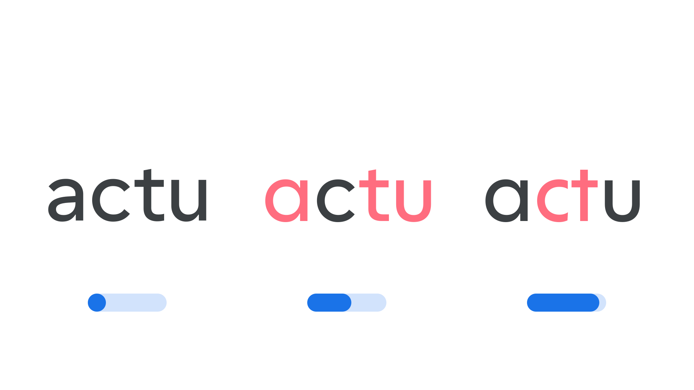

Geometric Form axis (GEOM)
By Google Fonts Knowledge contributors · Google Fonts Knowledge.
Original article · Source on GitHub · CC BY-SA 4.0. Text, illustrations and existing credits reproduced from the licensed Knowledge repository. Open Shelf adapted the layout and links; these adaptations are also CC BY-SA 4.0. No endorsement implied.
“Geometric Form” (GEOM in CSS) is an axis found in some variable fonts that transforms letterforms from their default construction into simplified geometric shapes—circles, triangles, and squares. Depending on the typeface, this transition can happen through a gradual reshaping of the glyphs, through character swaps at set points along the axis, or a combination of both.
The Google Fonts CSS v2 API defines the axis as:
| Default: | Min: | Max: | Step: |
|---|---|---|---|
| 0 | 0 | 100 | 10 |

Typeface: Cal Sans
At 0, letterforms keep their regular, default construction. As the axis increases towards 100, details are progressively simplified until the strokes resolve into the plain geometric shapes underlying the typeface’s design. Because the axis moves in fixed increments rather than a smooth continuum, some typefaces use it to switch cleanly between a small number of named styles rather than blend infinitely between them.
This axis is best suited to display typefaces, since strongly geometric letterforms can reduce readability at smaller sizes.